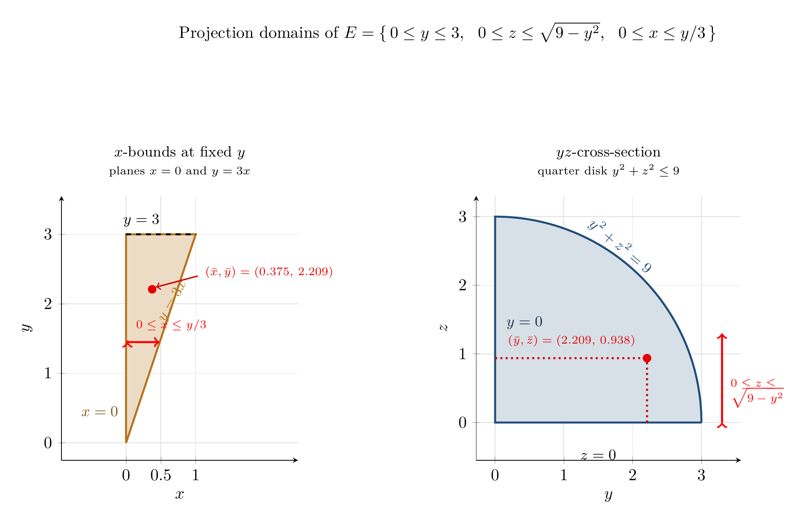

Please solve the problem in the following image.
(Image `20260928_011012_501919_utc_0800_0.png`. Alt text: Image: human_20260928_011012_501919_utc_0800)
20260928_011012_501919_utc_0800_0.png
End of problem
Answer
## Setting up the solid $E$
The cylinder $y^2+z^2=9$ has its **axis along the $x$-axis**, so every cross‑section perpendicular to the $x$-axis is the same quarter disk $y^2+z^2\le 9,\ y\ge0,\ z\ge0$. Inside the first octant the four bounding surfaces are:
| surface | role |
|---|---|
| $y^2+z^2=9$ | curved roof (caps $y$ and $z$) |
| $z=0$ | floor |
| $x=0$ | back wall |
| $y=3x$ | slanted side wall $\Rightarrow x=y/3$ |
Taking $x$ as the **inner** variable (its limits depend only on $y$) gives the cleanest order $dx\,dz\,dy$:
$$
E=\Big\{(x,y,z):\ 0\le y\le 3,\quad 0\le z\le \sqrt{9-y^2},\quad 0\le x\le \tfrac{y}{3}\Big\},\qquad \rho=x^2+y^2 .
$$
*Why this order?* For fixed $y$: $z$ runs up to the cylinder, and $x$ is squeezed between the two planes $x=0$ and $x=y/3$. No piecewise splitting is needed anywhere.
A quick scale check: $V=\displaystyle\int_0^3\tfrac{y}{3}\sqrt{9-y^2}\,dy=\tfrac13\cdot 9=3$, and $\rho$ ranges over $[0,\,x^2+y^2]\le \tfrac19+9$, so the mass should be a few times $3$ — a useful sanity target.
---
\documentclass[border=10pt]{standalone}
\usepackage{pgfplots}
\pgfplotsset{compat=1.18, trig format plots=deg}
\definecolor{cbla}{HTML}{B5751A}
\definecolor{cblb}{HTML}{1F4E79}
\begin{document}
\begin{tikzpicture}
% ================= left: x-bounds at fixed y =================
\begin{scope}[shift={(0,0)}]
\begin{axis}[
width=6.6cm, height=7.2cm, axis equal, axis lines=left, clip=false,
xlabel=$x$, ylabel=$y$, xmin=-0.06,xmax=1.60, ymin=-0.25,ymax=3.55,
xtick={0,0.5,1}, ytick={0,1,2,3}, grid=major, grid style={gray!25},
title={$x$-bounds at fixed $y$\\ {\scriptsize planes $x=0$ and $y=3x$}},
title style={font=\small\normalfont, align=center, yshift=2pt}]
\addplot[fill=cbla!25, draw=cbla, very thick] coordinates {(0,0) (1,3) (0,3)} \closedcycle;
\addplot[very thick, black, dashed, domain=0:1, samples=2] ({x},{3});
\addplot[<->, red, very thick] (0.02,1.45) -- (0.48,1.45);
\node[red, font=\scriptsize, anchor=south west] at (axis cs:0.06,1.52) {$0\le x\le y/3$};
\node[cbla, font=\small, rotate=60, anchor=south west] at (axis cs:0.62,1.60) {$y=3x$};
\node[cbla!70!black, font=\small, anchor=east] at (axis cs:-0.03,0.45) {$x=0$};
\node[black, font=\small, anchor=south] at (axis cs:0.22,3.02) {$y=3$};
\addplot[only marks, mark=*, mark size=2.4, red!90!black] coordinates {(0.3747,2.2089)};
\node[red!90!black, font=\scriptsize, anchor=west, align=left] at (axis cs:1.05,2.45)
{$(\bar x,\bar y)=(0.375,\,2.209)$};
\draw[->, red!80!black, thick] (axis cs:1.03,2.40) -- (axis cs:0.43,2.24);
\end{axis}
\end{scope}
% ================= right: quarter disk in the yz-plane =================
\begin{scope}[shift={(8.8cm,0)}]
\begin{axis}[
width=7.2cm, height=7.2cm, axis equal, axis lines=left, clip=false,
xlabel=$y$, ylabel=$z$, xmin=-0.25,xmax=3.55, ymin=-0.55,ymax=3.3,
xtick={0,1,2,3}, ytick={0,1,2,3}, grid=major, grid style={gray!25},
title={$yz$-cross-section\\ {\scriptsize quarter disk $y^2+z^2\le 9$}},
title style={font=\small\normalfont, align=center, yshift=2pt}]
\addplot[fill=cblb!18, draw=cblb, very thick, domain=0:90, samples=61, variable=t]
({3*cos(t)},{3*sin(t)}) \closedcycle;
\node[cblb, font=\small, rotate=-40, anchor=south] at (axis cs:1.70,2.42) {$y^2+z^2=9$};
\node[black, font=\small, anchor=north] at (axis cs:1.5,-0.32) {$z=0$};
\node[cblb!60!black, font=\small, anchor=west] at (axis cs:0.08,1.45) {$y=0$};
\addplot[<->, red, very thick] (3.30,0) -- (3.30,1.30);
\node[red, font=\scriptsize, anchor=north west, align=left] at (axis cs:3.34,0.72)
{$0\le z\le$\\[-2pt] $\sqrt{9-y^2}$};
\addplot[dotted, red!80!black, very thick] (2.2089,0) -- (2.2089,0.9375);
\addplot[dotted, red!80!black, very thick] (0,0.9375) -- (2.2089,0.9375);
\addplot[only marks, mark=*, mark size=2.4, red!90!black] coordinates {(2.2089,0.9375)};
\node[red!90!black, font=\scriptsize, anchor=south west] at (axis cs:0.10,1.02)
{$(\bar y,\bar z)=(2.209,\,0.938)$};
\end{axis}
\end{scope}
\node[font=\normalsize, align=center] at (8.2cm,9.1cm)
{Projection domains of $E=\{\,0\le y\le 3,\ \ 0\le z\le\sqrt{9-y^2},\ \ 0\le x\le y/3\,\}$};
\end{tikzpicture}
\end{document}

pgfplots_1.png
---
## (a) The mass $m=\iiint_E \rho\,dV$
**Step 1 — the $x$-integration.** With $\displaystyle\int_0^{y/3}(x^2+y^2)\,dx=\Big[\frac{x^3}{3}+y^2x\Big]_0^{y/3}=\frac{y^3}{81}+\frac{y^3}{3}=\frac{28}{81}y^3:$
$$
m=\frac{28}{81}\int_0^3 y^3\sqrt{9-y^2}\;dy .
$$
**Step 2 — the $y$-integral.** Substituting $u=9-y^2$ (so $y^2=9-u$, $y\,dy=-\tfrac{du}{2}$):
$$
\int_0^3 y^3\sqrt{9-y^2}\,dy=\frac12\int_0^9 (9-u)u^{1/2}\,du=\frac12\Big[6u^{3/2}-\frac25 u^{5/2}\Big]_0^9=81-\frac{486}{5}=\frac{162}{5}.
$$
**Step 3 — combine.**
$$
m=\frac{28}{81}\cdot\frac{162}{5}=\frac{56}{5}=11.2\qquad\Longrightarrow\qquad \boxed{m\approx 11.200}
$$
(Check: mean density $=m/V=(56/5)/3=56/15\approx3.73$, comfortably inside $[0,9.1]$.)
---
## (b) The center of mass $\bar x=\dfrac{M_{yz}}{m},\ \bar y=\dfrac{M_{xz}}{m},\ \bar z=\dfrac{M_{xy}}{m}$
Each moment is the same $x$-then-$z$-then-$y$ pipeline with one extra factor of the coordinate.
**$\bar x$:** $\displaystyle\int_0^{y/3}x(x^2+y^2)dx=\Big[\frac{x^4}{4}+\frac{y^2x^2}{2}\Big]_0^{y/3}=\Big(\frac1{324}+\frac1{18}\Big)y^4=\frac{19}{324}y^4$, so
$$
M_{yz}=\frac{19}{324}\int_0^3 y^4\sqrt{9-y^2}\,dy .
$$
**$\bar y$:** $\displaystyle\int_0^{y/3}y(x^2+y^2)dx=\frac{28}{81}y^4$, so
$$
M_{xz}=\frac{28}{81}\int_0^3 y^4\sqrt{9-y^2}\,dy .
$$
**The even-power integral** needs the trig substitution $y=3\sin\theta$ (the $u$-sub leaves a half-integer power of $9-u$):
$$
\int_0^3 y^4\sqrt{9-y^2}\,dy=3^6\int_0^{\pi/2}\sin^4\theta\cos^2\theta\,d\theta=729\cdot\frac12 B\Big(\tfrac52,\tfrac32\Big)=729\cdot\frac{\pi}{32}=\frac{729\pi}{32}.
$$
Hence $\;M_{yz}=\dfrac{19}{324}\cdot\dfrac{729\pi}{32}=\dfrac{171\pi}{128}\approx4.19697\;$ and $\;M_{xz}=\dfrac{28}{81}\cdot\dfrac{729\pi}{32}=\dfrac{63\pi}{8}\approx24.74004.$
**$\bar z$:** here the $z$-integral is elementary, $\displaystyle\int_0^{\sqrt{9-y^2}}z\,dz=\frac{9-y^2}{2}$, and no root survives:
$$
M_{xy}=\frac{28}{81}\int_0^3 y^3\,\frac{9-y^2}{2}\,dy=\frac{14}{81}\Big[\frac{81y^2}{4}-\frac{y^6}{6}\Big]_0^3=\frac{14}{81}\cdot\frac{243}{4}=\frac{21}{2}=10.5 .
$$
**Divide by $m=56/5$:**
$$
\bar x=\frac{171\pi/128}{56/5}=\frac{855\pi}{7168}\approx0.3747296,\quad
\bar y=\frac{63\pi/8}{56/5}=\frac{45\pi}{64}\approx2.2089323,\quad
\bar z=\frac{21/2}{56/5}=\frac{15}{16}=0.9375 .
$$
$$
\boxed{(\bar x,\bar y,\bar z)\approx(0.375,\ 2.209,\ 0.938)}
$$
Both $\bar y<3$ and $\bar z<1.273$ (the quarter-disk centroid height $4\cdot 3/3\pi$) behave as expected: the wedge $0\le x\le y/3$ is *widest at large $y$*, and $\rho$ also grows with $y$, so the mass is pulled toward $y=3$, $z=0$.
---
## (c) Moment of inertia about the $z$-axis
Distance from the $z$-axis is $\sqrt{x^2+y^2}$, so with $\rho=x^2+y^2$ the integrand becomes $\rho r^2=(x^2+y^2)^2$:
$$
I_z=\iiint_E (x^2+y^2)^2\,dV .
$$
**Step 1 — expand and integrate in $x$:**
$$
\int_0^{y/3}(x^2+y^2)^2dx=\int_0^{y/3}(x^4+2x^2y^2+y^4)dx=\Big[\frac{x^5}{5}+\frac{2x^3y^2}{3}+y^4x\Big]_0^{y/3}
=\Big(\frac{1}{1215}+\frac{2}{81}+\frac{1}{3}\Big)y^5=\frac{436}{1215}y^5 .
$$
**Step 2 — the $z$-integral just contributes $\sqrt{9-y^2}$, and** (again $u=9-y^2$, $y^5dy=y^4\cdot y\,dy$):
$$
\int_0^3 y^5\sqrt{9-y^2}\,dy=\frac12\int_0^9(9-u)^2u^{1/2}du=\frac12\Big[108u^{3/2}-\frac{72}{5}u^{5/2}+\frac27 u^{7/2}\Big]_0^9
=729-\frac{4374}{5}+\frac{2187}{7}=\frac{5832}{35}.
$$
**Step 3 — combine:**
$$
I_z=\frac{436}{1215}\cdot\frac{5832}{35}=\frac{436}{35}\cdot\frac{24}{5}=\frac{10464}{175}\approx59.7942857
\qquad\Longrightarrow\qquad \boxed{I_z\approx 59.794}
$$
*Consistency check:* $I_z/m=59.794/11.2=5.339$, i.e. an rms distance $\sqrt{5.339}\approx2.31$ from the $z$-axis — right between $\bar y=2.209$ and the outer radius $3$, exactly where a mass concentrated near large $y$ should sit.
---
## Summary
| quantity | exact | 3 decimal places |
|---|---|---|
| (a) mass $m$ | $56/5$ | $11.200$ |
| (b) $\bar x$ | $855\pi/7168$ | $0.375$ |
| (b) $\bar y$ | $45\pi/64$ | $2.209$ |
| (b) $\bar z$ | $15/16$ | $0.938$ |
| (c) $I_z$ | $10464/175$ | $59.794$ |
All five values were confirmed twice: symbolically (exact rational/$\pi$ forms) and by an independent 3-D Gauss–Legendre quadrature of $\iiint_E$ (agreement to $2\times10^{-13}$).
### How to solve this kind of problem
1. **Identify the axis of the cylinder** ($y^2+z^2=R^2\Rightarrow$ axis $=x$-axis). Then choose the order so the *capped* variables ($y,z$) are outer and the *linearly bounded* variable ($x$) is inner: $dx\,dz\,dy$ avoids splitting the region.
2. **Integrate the polynomial in $x$ first** — it always collapses to a constant $\times y^k$.
3. **Odd power of $y$ outside the root** $\to u=9-y^2$ (rational answer). **Even power** $\to y=3\sin\theta$ and a Wallis/Beta integral (answer carries $\pi$). This is why $m$ and $\bar z$ are rational while $\bar x,\bar y$ involve $\pi$.
4. **Moments:** multiply $\rho$ by $x$, $y$, $z$ respectively; for $z$ use $\int_0^{\sqrt{9-y^2}}z\,dz=(9-y^2)/2$, which removes the root entirely.
5. **Inertia about an axis:** use the squared *distance to that axis* — $r_z^2=x^2+y^2$, $r_x^2=y^2+z^2$, $r_P^2=x^2+y^2+z^2$ — and keep $\rho$ as a separate factor.
6. Always finish with a **sanity check** ($V$, mean density, rms radius) before rounding to the requested decimals.
$$
\boxed{\text{(a) } m\approx 11.200\qquad \text{(b) } (\bar x,\bar y,\bar z)\approx(0.375,\ 2.209,\ 0.938)\qquad \text{(c) } I_z\approx 59.794}
$$